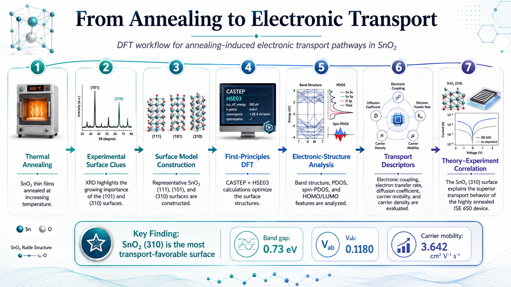

SnO₂ (111)
Band gap4.87 eV
Vab0.0035
k⁰4.051 × 10⁻¹⁴
D⁰8.341 × 10⁻²⁴
μc9.220 × 10⁻⁷
nc1.960 × 10¹³
Compact and comparatively electronically resistive.
DFT Portfolio · Project 01
A first-principles DFT study connecting crystallographic surface evolution with electronic transport behavior in annealed SnO₂ interdigitated supercapacitor electrodes.
Project Overview
High-temperature annealing substantially improved the experimental performance of SnO₂ interdigitated devices. The computational part of this work was designed to identify the electronic origin of that improvement by comparing representative SnO₂ crystal surfaces and linking their electronic structures to experimentally observed transport behavior.
Central Insight
Its open, anisotropic structure is associated with a strongly reduced calculated band gap, stronger electronic coupling, and substantially improved transport-related descriptors compared with the (111) and (101) surfaces.
Scientific Question
Experimental XRD showed that the relative importance of the (101) and (310) reflections increased with thermal treatment. DFT was therefore used to compare the electronic characteristics of pristine SnO₂ (111) with the experimentally relevant (101) and (310) surfaces. The goal was to build a mechanistic link between crystallographic evolution and charge-transport behavior.
Computational Framework

DFT workflow. From experimental annealing and crystallographic surface selection to first-principles electronic-structure analysis, transport descriptors, and DFT–experiment correlation.
Surface Comparison
Compact and comparatively electronically resistive.
Distorted surface geometry with intermediate electronic behavior.
Open anisotropic configuration with the strongest calculated transport characteristics among the three surfaces.

Why SnO₂ (310) wins. A visual comparison of the three modelled surfaces and the transport descriptors that distinguish the (310) configuration.
Electronic Structure
The (310) model exhibits an anisotropic geometry and elongated Sn–O coordination that creates comparatively open structural pathways. In the reported calculations, this surface shows a substantially smaller band gap, stronger Sn 5p and O 2p contributions near the Fermi level, pronounced spin-PDOS asymmetry, and improved charge delocalization. Together, these features were interpreted as the electronic origin of its superior transport behavior.
Theory Meets Experiment
DFT
Lowest calculated band gap and highest reported electronic coupling, diffusion coefficient, carrier mobility, and carrier density among the modelled surfaces.
Experiment
The highly annealed device exhibited the strongest experimental electrochemical and transport performance, including lower resistance and enhanced transport-related parameters.

Theory–experiment correlation. The surface-level electronic advantages predicted for SnO₂ (310) provide an atomistic interpretation of the superior performance observed for the highly annealed ISE 650 device.
Project Contribution
My credited contributions to this study include:
Published Work
Premkumar Jayaraman, Hamed Pourzolfaghar, Yuan-Yao Li, Helen Annal Therese
Annealing induced electronic transport pathways in SnO₂ interdigitated supercapacitors: Experimental and first-principles DFT investigations
Nano Energy 144 (2025) 111414